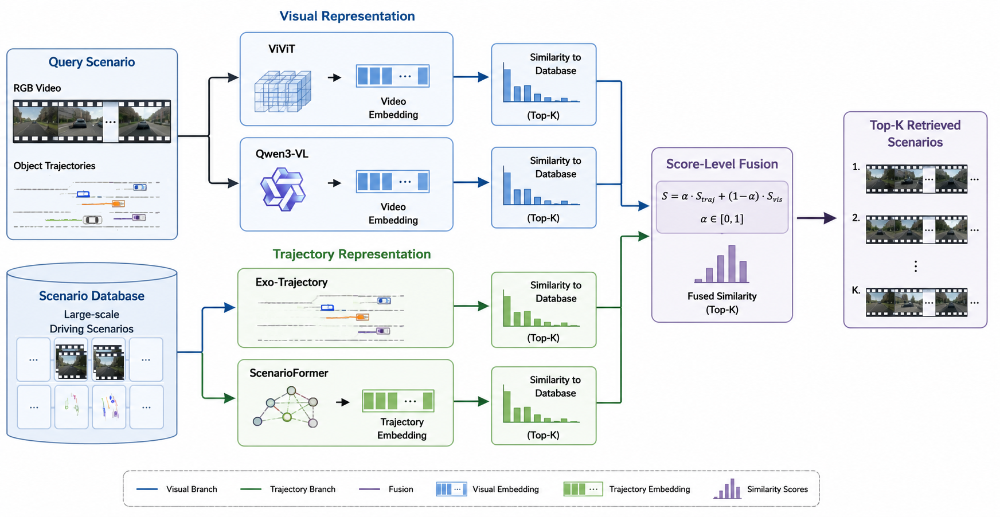

Large-scale autonomous driving datasets contain millions of recorded scenarios, creating an increasing need for efficient retrieval systems that can identify situations similar to a given query. Existing approaches typically rely on either visual scene representations or trajectory-based motion descriptions, making it difficult to understand the strengths and limitations of each modality for scenario retrieval.
We present a multimodal scenario retrieval framework that unifies visual and trajectory-based representations within a single retrieval pipeline. Our framework investigates two complementary trajectory retrieval methods: Exo-Trajectory, an explicit matching algorithm based on surrounding-agent motion, and ScenarioFormer, a transformer-based trajectory encoder trained with contrastive learning. These methods are evaluated alongside strong vision-based baselines to study how appearance and motion contribute to scenario similarity.
Experimental results demonstrate that trajectory representations excel on motion-centric scenarios such as cut-ins, turning maneuvers, and traffic queueing, while vision models perform better when appearance and semantic context provide stronger cues. Most importantly, combining visual and trajectory information consistently produces the highest retrieval performance, highlighting the complementary nature of appearance- and motion-based representations. Our findings motivate multimodal retrieval systems for autonomous-driving data mining, dataset curation, corner-case discovery, and scenario-based validation.
We study autonomous-driving scenario retrieval using two complementary sources of information: visual appearance extracted from video sequences and traffic dynamics extracted from object trajectories. Each modality captures a different notion of similarity. While visual models encode scene semantics, road layout, and appearance, trajectory representations explicitly describe how surrounding traffic participants move and interact with the ego vehicle.
Our framework consists of four retrieval modules: two vision-based baselines (ViViT and Qwen3-VL) and two trajectory-based approaches (Exo-Trajectory and ScenarioFormer). The final retrieval score is obtained by fusing visual and trajectory similarities, leveraging the complementary strengths of both modalities.

Overview of the proposed multimodal scenario retrieval framework.
A transformer-based video encoder that extracts spatio-temporal representations from RGB video clips. Similarity is computed using cosine similarity between video embeddings.
A large vision-language model producing semantic embeddings from sampled video frames. It captures scene appearance, object context, and high-level traffic semantics.
An explicit trajectory matching algorithm that compares the motion of surrounding traffic participants using Fréchet distance and the Hungarian assignment algorithm.
A transformer-based trajectory encoder trained with contrastive learning to generate compact scenario embeddings for efficient large-scale retrieval.
Visual and trajectory representations capture complementary notions of scenario similarity. Instead of selecting a single modality, we combine them through score-level fusion:
\[ s = \alpha s_{\text{traj}} + (1-\alpha)s_{\text{vision}} \]
where \( \alpha \) controls the contribution of the trajectory representation. This simple score-level fusion consistently improves retrieval performance by leveraging both appearance and motion cues.
We evaluate retrieval performance on the dynamic subset of the benchmark using three retrieval metrics: NDCG@10, Recall@15 with at least two relevant scenarios, and Recall@15 with three relevant scenarios. Higher values indicate better retrieval quality. The results compare standalone vision-based and trajectory-based retrieval approaches.
| Method | NDCG@10 | Rec@15≥2 | Rec@15(3) |
|---|---|---|---|
| ViViT | 0.514 | 0.421 | 0.363 |
| ScenarioFormer | 0.565 | 0.441 | 0.388 |
| Exo-Trajectory | 0.565 | 0.475 | 0.434 |
| Qwen3-VL | 0.621 | 0.513 | 0.463 |
Table 1. Standalone retrieval performance on the dynamic subset of the benchmark. Higher values indicate better retrieval performance.
Since visual and trajectory representations capture complementary aspects of scenario similarity, we combine retrieval scores using weighted score-level fusion. The parameter \( \alpha \) controls the contribution of the trajectory-based similarity score. Fusion consistently improves retrieval performance compared with the corresponding vision-only baselines.
| Fusion Method | α | NDCG@10 | ∆ |
|---|---|---|---|
| ViViT + ScenarioFormer | 0.4 | 0.599 | +0.085 |
| ViViT + Exo-Trajectory | 0.5 | 0.616 | +0.102 |
| Qwen3-VL + ScenarioFormer | 0.3 | 0.662 | +0.041 |
| Qwen3-VL + Exo-Trajectory | 0.3 | 0.671 | +0.050 |
Table 2. Best score-level fusion results on the dynamic benchmark. ∆ denotes the improvement in NDCG@10 over the corresponding vision-only baseline.
The results show that trajectory representations provide strong complementary information for dynamic driving scenarios. While Qwen3-VL achieves the strongest standalone performance, combining visual and trajectory similarities further improves retrieval quality. The best-performing configuration, Qwen3-VL combined with Exo-Trajectory, achieves an NDCG@10 of 0.671, demonstrating the benefit of integrating appearance and motion information.
We present qualitative retrieval results across a diverse set of driving scenarios. The below videos present a query video and the retrieved top 1 scenario using different methods. The videos compare the retrieved scenarios produced by the proposed multimodal framework and individual retrieval modules, illustrating how visual and trajectory representations capture complementary notions of scenario similarity.
@misc{matuszka2026multimodalscenariosimilaritysearch,
title={Multimodal Scenario Similarity Search for Autonomous Driving},
author={Tamás Matuszka and András Tamásy and Balázs Szolár},
year={2026},
eprint={2607.09428},
archivePrefix={arXiv},
primaryClass={cs.CV},
url={https://arxiv.org/abs/2607.09428},
}